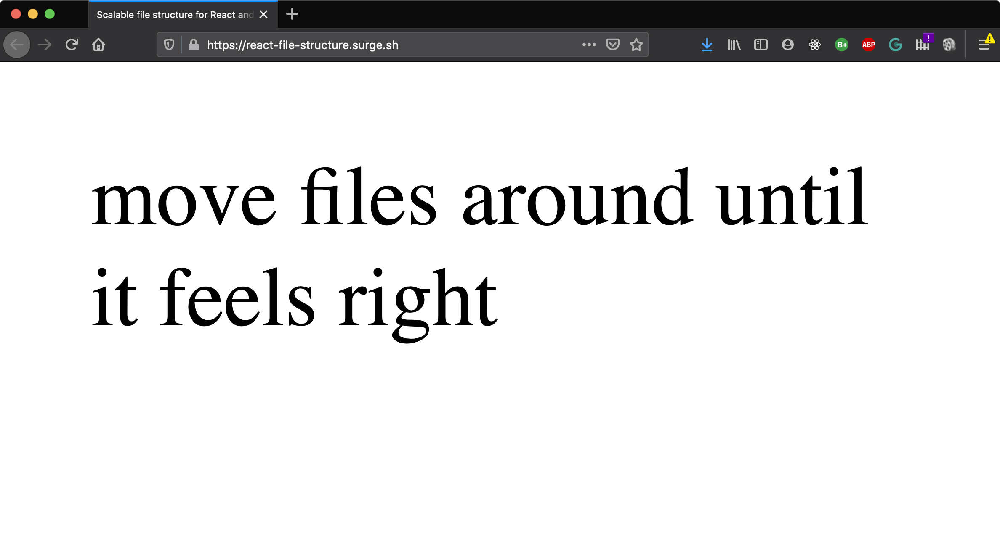
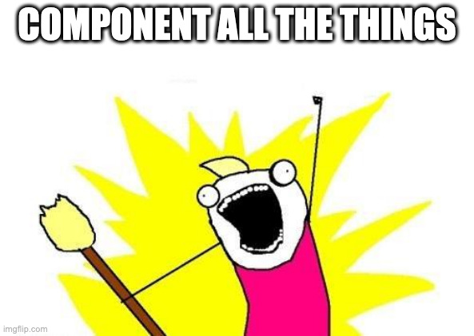

Porządkowanie kodu na froncie
JS Clean Architecture
Perspektywa... ma znaczenie :)


Czytanie kodu
>
Pisanie
How it feels to learn JavaScript in 2016

Clean Code
(pojedynczy plik/moduł)
import React from 'react'; import { makeStyles } from '@material-ui/core/styles';const useStyles = makeStyles({export const useStyles = makeStyles({root: { backgroundColor: 'red', color: props => props.color, }, }); export default function MyComponent(props) { const classes = useStyles(props); return <div className={classes.root} />; }
import React from 'react';
import { makeStyles } from '@material-ui/core/styles';
export default function MyComponent(props) {
const classes = useStyles(props);
return <div className={classes.root} />;
}
const useStyles = makeStyles({
root: {
backgroundColor: 'red',
color: props => props.color,
},
});
Nazwa?
MyComponent.jsxjohnpapa/angular-styleguide
Place bindable members at the top (...) and not spread through the
controller code
/* recommended */
function SessionsController() {
var vm = this;
vm.gotoSession = gotoSession;
vm.refresh = refresh;
vm.search = search;
vm.sessions = [];
vm.title = 'Sessions';
////////////
function gotoSession() {
/* */
}
function refresh() {
/* */
}
function search() {
/* */
}
}
export interface Dataservice {
getAvengers(): Avenger[];
}
angular
.module('app.core')
.factory('dataservice', dataservice);
dataservice.$inject = ['$http'];
function dataservice($http: IHttpService): Dataservice {
return {
getAvengers
};
function getAvengers(): Avenger[] {
return $http.get('/api/maa')
.then(getAvengersComplete)
.catch(getAvengersFailed);
function getAvengersComplete(response) { /* ... */ }
function getAvengersFailed(error) { /* ... */ }
}
}
Clean Architecture
(relacje między modułami)
Problemy?
- Trudniejsza praca nad ficzerem (np. user/project)
- JIRA - zadania są zwykle zorientowane na domeny
- Raczej nie "jako użytkownik chcę zmienić wszystkie serwisy"
- Skakanie po wielu ścieżkach podczas pracy
- Dużo (7+) plików w folderze
- Zwłaszcza jak mamy folder
components
- Zwłaszcza jak mamy folder
Dobre praktyki?
- micro-frontends!

- Web Components!

- Redux!
- Nie organizuje kodu, tylko sposób pracy na danych
react-file-structure.surge.sh
johnpapa/angular-styleguide
LIFT Principle
- Locate easily
- Identify the file purpose
- Flat folder structure
- T-DRY (Try to Stick to DRY)
Folders-by-Feature Structure
- Foldery jak domeny, np. user, project
- Pomaga tworzyć zgodnie z LIFT
Jakie odpowiedzialności plików?
- Angular: service, module, component, pipe, ...
- React:

Komponenty?
- Presentational
and Container Components
- I’ve seen it enforced (...) with almost dogmatic fervor far too many times
Table,TableView- ...- Czasem "mały stan" jest przydatny w komponencie "prezentacyjnym"
- (...) it let me separate complex stateful logic from other aspects of the component. Hooks let me do the same (...) without an arbitrary division
Haczyki?
- Czasem dobre do wspólnej logiki biznesowej,
np.
useAssignedTags - Przeważnie - aspekty techniczne, a nie biznesowe. Np. routing,
useMountSubscription - Nie poprawiają organizacji kodu
Rekomendacja
- Trzeba coś wybrać w zespole i się tego trzymać!
- Defer Controller Logic to Services
- MVC!
- Temat-rzeka, brak jednej definicji MVC
- Model - dane z API i funkcje obrabiające (pierwsze mapowanie itd.)
- View - JSX; tu można dzielić na presentational i stateful
- Controller - logika używana w View
import React, { useState } from 'react';
import { useMountSubscription } from '../common';
import { getProject, Project as Model } from './project.api';
import { clickProject } from './project.service';
export interface ProjectProps {
id: number;
}
export function Project({ id }: ProjectProps) {
const [project, setProject] = useState<Model>();
useMountSubscription(() => getProject(id).then(setProject));
if (!project) {
return null;
}
return (
<ul onClick={() => clickProject(project)}>
<li>{project.name}</li>
<li>{project.type}</li>
</ul>
);
}
Efekty?
- Piękne testy, np. tylko dla
clickProject- Testowanie (nawet z React Testing Library), gdy używamy contextu, historii, innych = masakra
- Łatwo przepiąć się na inne rozwiązanie
- React = tylko View z MVC. Tak jak miało być
- Po pierwszym szoku, łatwe do utrzymania
Dzięki!
- 10 trendów JS: mat3e.github.io/trendy
- mat3e.github.io/talks/js-arch/Tech3camp